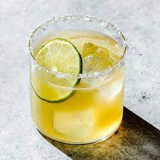

Tequila Limeade

The Margarita is one of the most popular cocktails in North America—for good reason. Combining the tang of lime and the sweetness of orange liqueur with tequila's distinctive flavor profile, the classic Margarita remains one of the most recognizable and timeless examples of the sour category of cocktails.
Ingredients
- 2 ounces blanco tequila
- 1/2 ounce orange liqueur
- 1 ounce lime juice, freshly squeezed
- 1/2 ounce agave syrup
- Garnish: lime wheel
- Garnish: kosher salt (optional)
Steps
- Add tequila, orange liqueur, lime juice and agave syrup to a cocktail shaker filled with ice, and shake until well-chilled.
- Strain into a rocks glass over fresh ice.
- Garnish with a lime wheel and kosher salt rim (optional).